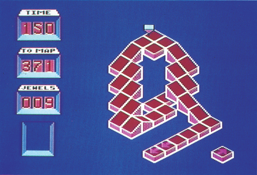
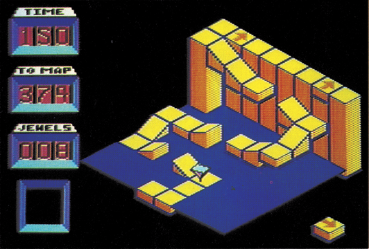
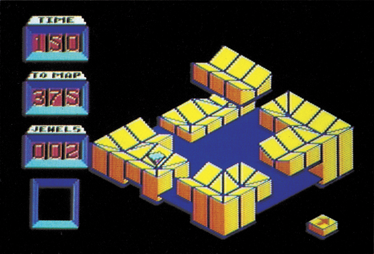

Zum Durchdrehen...
Zuerst macht es Spaß, dann süchtig und schließlich wahnsinnig. Es ist anspruchsvoll und fast unlösbar. Es heißt »Spindizzy« und ist eines der besten C 64-Spiele.

Die Wissenschaftler der »Firma« haben eine neue Dimension entdeckt. Das einzige, das sie dort finden können, ist eine seltsam eckige Welt, die im leeren Raum zu schweben scheint. Die groben Umrisse sind bekannt, doch jetzt benötigt man eine genaue Karte dieser Welt. Also bekommen Sie, der technische Assistenten-Gehilfe der Abteilung »Kartographie«, den Auftrag, die Welt per Fernsteuerung und einem kleinen Fahrzeug zu erforschen. Da das ganze ein Regierungsauftrag ist, ist das Geld und somit die Zeit für das Forschungsprojekt knapp. Allerdings werden Ihnen für jede neue Entdeckung und für eingesammelte Wertgegenstände, sprich Juwelen, erneut Geldmittel bereitgestellt, was weitere wertvolle Sekunden bringt.
Natürlich stellt man Ihnen eines der ältesten Forschungsfahrzeuge zur Verfügung: »Gerald«, so sein Spitzname, sieht aus wie eine auf den Kopf gestellte Pyramide und ist nicht gerade einfach zu steuern. Sollten Sie Gerald verlieren, wenn er beispielsweise über den Rand der Welt hinausfährt und — fällt, wird ein Ersatz-Gerald an den Absturzort gebeamt, was allerdings einige Zeit kostet.
Daß die Expedition nicht zu einfach wird, dafür sorgen eine Menge von Hindernissen. Rampen, Treppen, Wippen, Sprungschanzen, Zug- und Klappbrücken, Laufstege, Einbahnstraßen, Schalter, Lifte, Eisflächen, Seen, Trampoline, und nicht zuletzt gefährliche »Einwohner« bestimmen die Szene. Spielziel ist es, möglichst viele Screens zu erreichen, bevor die Zeit abläuft.

Am wichtigsten für den Spielverlauf sind die zahlreichen, im Boden eingelassenen Schalter, die eine Vielzahl von Funktionen auslösen können. Da werden Brücken gebaut, Lifte aktiviert oder Sperren ausgeschaltet. Meistens sind aber Ursache (Schalter) und Wirkung (Brücke, Lift, Sperre) mehrere Screens voneinander entfernt. Außerdem gibt es Schalterketten: Um an bestimmte Orte zu gelangen, müssen mehrere Schalter in der richtigen Reihenfolge betätigt werden. Zum Beispiel enthält ein Screen den Ein-Schalter für einen Lift, der in einem anderen Screen steht und direkt am Ausgang den Aus-Schalter. Der Lift wird also immer ausgeschaltet, bevor man überhaupt bei ihm ankommt. In wiederum einem anderen Screen befindet sich nun aber ein Schalter, der eine Brücke über den Aus-Schalter baut, womit der Lift in aktivem Zustand erreichbar wird. Dieses ist nur eines der logischen Rätsel, die in Spindizzy versteckt sind.
Wieso immer nur alleine spielen? Spindizzy kann man auch zu zweit genießen. Der Zwei-Spieler-Modus ist allerdings sehr ungewöhnlich: Ein Spieler steuert den Kreisel nach oben und unten, der andere nach links und rechts. Daß das gar nicht mal so einfach ist, können Sie sich sicherlich denken.
Über die Grafik von Spindizzy könnte man viele Worte verlieren, doch bevor wir hier in Lobeshymnen ausbrechen, zeigen wir Ihnen auf unseren Fotos drei von 387 Screens, damit Sie sich selber einen Eindruck verschaffen können. Da Spindizzy ein echtes 3D-Spiel ist, kann Gerald auch mal hinter einer Mauer verschwinden, doch ein Druck auf eine Funktionstaste dreht das von Gerald übertragene Bild um 90 Grad, so daß man wieder freie Sicht auf die Fahrbahn hat. Auch bei Spindizzy hat man zugunsten der Grafik auf tollen Sound verzichtet.

Daß Spindizzy besonders schwer ist, brauchen wir denen nicht zu sagen, die das Spiel schon kennen. Wir kündigen jetzt schon einmal an, daß in einer der nächsten Ausgaben in der Rubrik »Tips und Tricks« der offizielle Spiele-Trainer zu Spindizzy erscheinen wird. Dieser wurde uns vom Autor zur Verfügung gestellt und funktioniert bei jedem Spindizzy-Originalprogramm. Bis dahin: Fröhliches Kreiseln.
(bs)| Titel | Spindizzy |
|---|---|
| Spielidee | 11/15 |
| Grafik | 14/15 |
| Sound | 5/15 |
| Schwierigkeit | 14/15 |
| Motivation | 13/15 |
| Besonderheiten | 387 3D-Screens |
| Hersteller | Electric Dreams/Activision |
| Preis | 39,— (Kass.), 59,— (Disk.) |
| Bezugsquelle | Ariolasoft, Carl-Bertelsmann-Str. 161, 4830 Gütersloh |